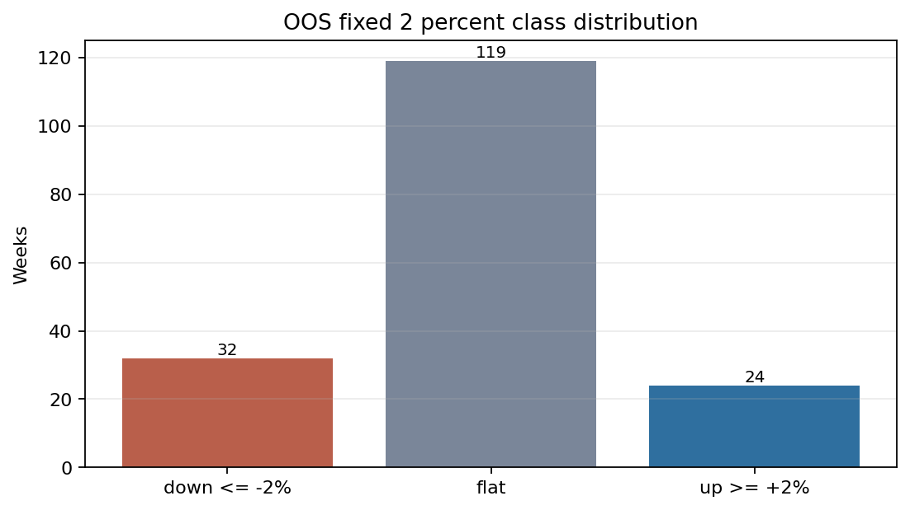
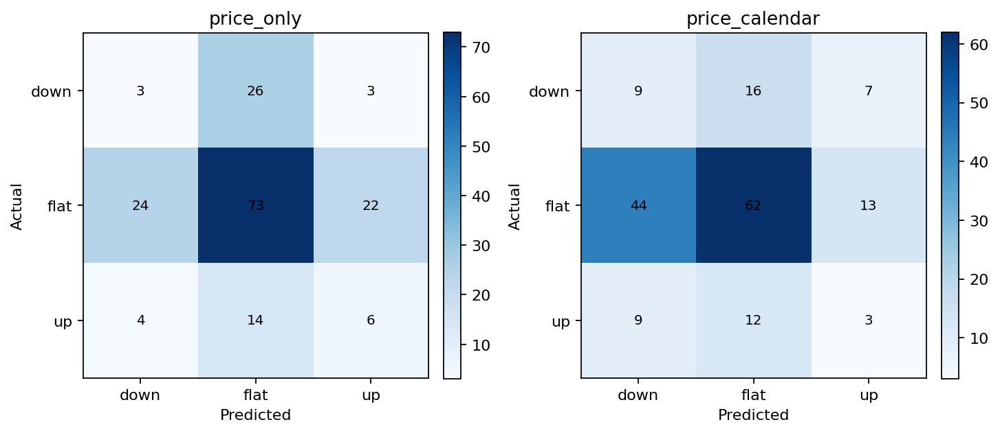
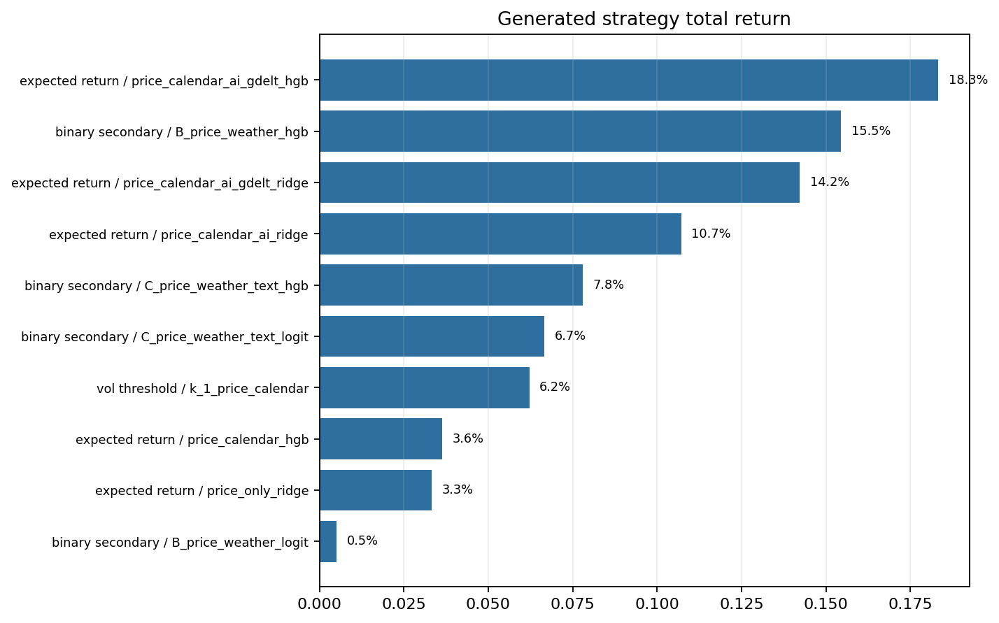
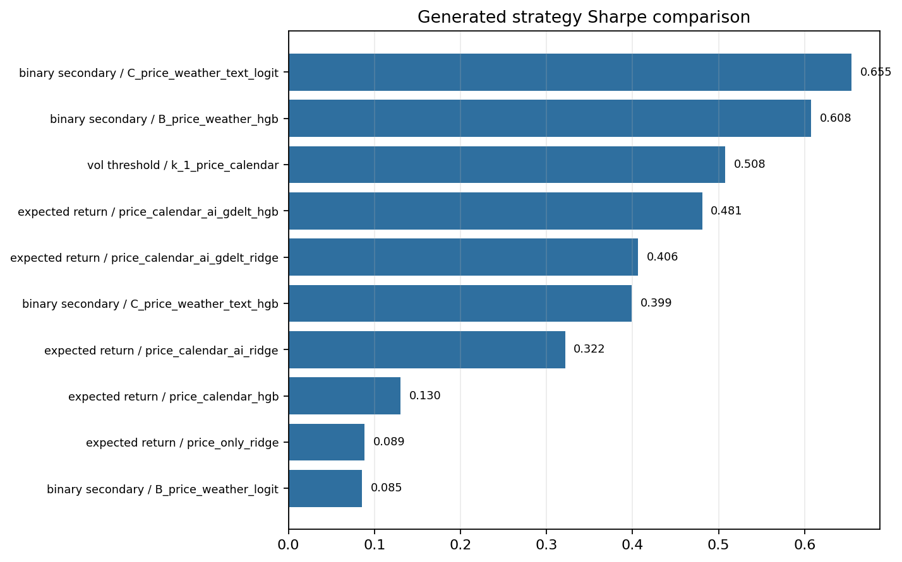
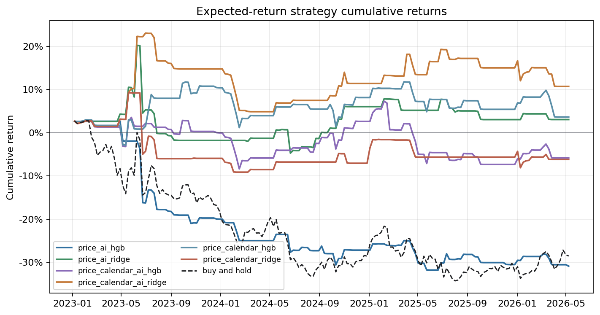

Text, News, Calendar, and Price Signal Results#
What This Page Evaluates#
This page summarizes the weekly forecasting experiments. The goal is to test whether historical price features become more useful when they are combined with crop-season calendar variables, AI/USDA-style text scores, and GDELT news signals.
The weekly pipeline evaluates two practical questions:
Question |
Experiment |
Interpretation |
|---|---|---|
Can we classify large weekly moves? |
Fixed +/-2% down/flat/up target. |
Useful if the model can identify the relatively rare directional weeks. |
Can we trade a forecasted return? |
Expected-return strategy with transaction-cost-aware trading. |
Useful if forecasts improve portfolio outcomes even when point forecasts are noisy. |
The out-of-sample weekly period contains 175 test weeks across 14 expanding walk-forward folds.
Headline Results#
Result area |
Best or most relevant run |
Key result |
|---|---|---|
Fixed +/-2% classifier |
|
49.7% accuracy, 32.6% balanced accuracy, 32.6% macro F1. |
Expected-return strategy |
|
18.3% total return and 0.481 Sharpe. |
Highest Sharpe in generated strategy comparison |
|
0.655 Sharpe with 6.7% total return. |
Price-only expected-return reference |
|
3.3% total return and 0.089 Sharpe. |
The classification results are weak in absolute terms, but the strategy comparison suggests that feature-enriched signals may still contain useful timing information.
Fixed +/-2% Target Balance#

The fixed-band target is highly imbalanced:
Class |
Definition |
Out-of-sample weeks |
|---|---|---|
Down |
Next-week return <= -2% |
32 |
Flat |
-2% < next-week return < +2% |
119 |
Up |
Next-week return >= +2% |
24 |
The flat class represents about two-thirds of the test set. This makes raw accuracy less informative: a model can look stable by predicting flat too often while still missing the weeks that matter most for trading.
Classification Quality#

The confusion matrices show the main limitation of the fixed-band classifier. The price-only model identifies many flat weeks, but it misses most of the down and up weeks. The price-calendar model predicts more down weeks, but many of those are actually flat.
This is the clearest evidence that the +/-2% weekly target is a difficult classification problem. Calendar timing alone does not solve the core separation problem, and the directional classes remain sparse.
Strategy Total Return#

Trading performance gives a more constructive view of the feature blocks. The best total-return result is the expected-return model using calendar, AI/USDA-style, and GDELT features with a nonlinear estimator:
Rank |
Strategy |
Total return |
|---|---|---|
1 |
Expected return / |
18.3% |
2 |
Binary secondary / |
15.5% |
3 |
Expected return / |
14.2% |
4 |
Expected return / |
10.7% |
5 |
Binary secondary / |
7.8% |
The strongest return results generally come from combined feature sets rather than price-only models. This supports the project thesis that market, calendar, and information variables may be complementary.
Strategy Sharpe#

Risk-adjusted performance changes the ranking. The highest Sharpe ratio comes from a secondary binary model using weather/text features, while the best expected-return strategy remains competitive but does not rank first.
Rank |
Strategy |
Sharpe |
|---|---|---|
1 |
Binary secondary / |
0.655 |
2 |
Binary secondary / |
0.608 |
3 |
Volatility threshold / |
0.508 |
4 |
Expected return / |
0.481 |
5 |
Expected return / |
0.406 |
The important takeaway is that higher return is not identical to better risk-adjusted behavior. The best presentation of the results should therefore discuss both return and Sharpe, rather than selecting a single winner.
Expected-Return Cumulative Performance#

The cumulative return paths show that selected expected-return strategies avoid much of the buy-and-hold drawdown in the out-of-sample period. The best combined-feature strategies remain positive, while buy-and-hold ends materially negative.
The paths are still uneven, especially during regime shifts in 2024. This means the results should be interpreted as evidence of potential signal value rather than proof of a production-ready trading rule.
Interpretation#
The weekly experiments lead to three conclusions:
The fixed +/-2% classifier is not strong enough to be the main practical result, because the target is imbalanced and the models struggle with directional weeks.
Expected-return and strategy-based evaluation is more informative for this project than classification accuracy alone.
Combining price, calendar, AI/USDA-style text, and GDELT news features produces more encouraging trading results than price-only baselines, although the evidence remains exploratory.
In presentation terms, the weekly pipeline is best framed as a disciplined comparison of information sets: price-only signals are a necessary baseline, but the more interesting results come from combining market history with crop-season and text/news information.